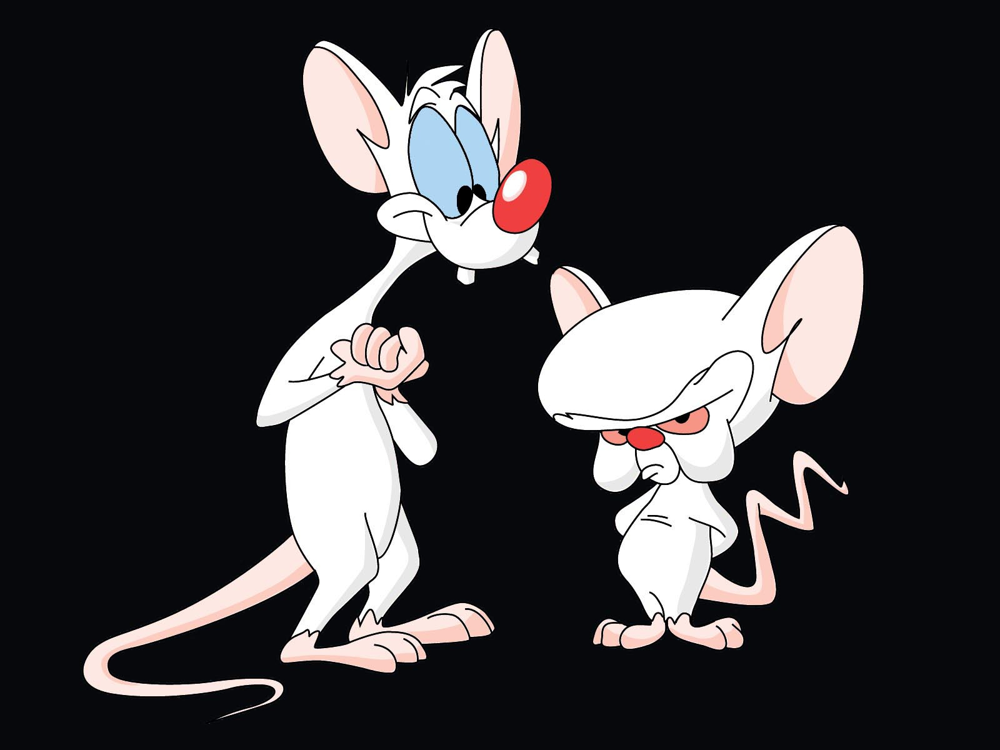
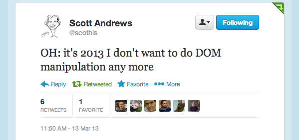
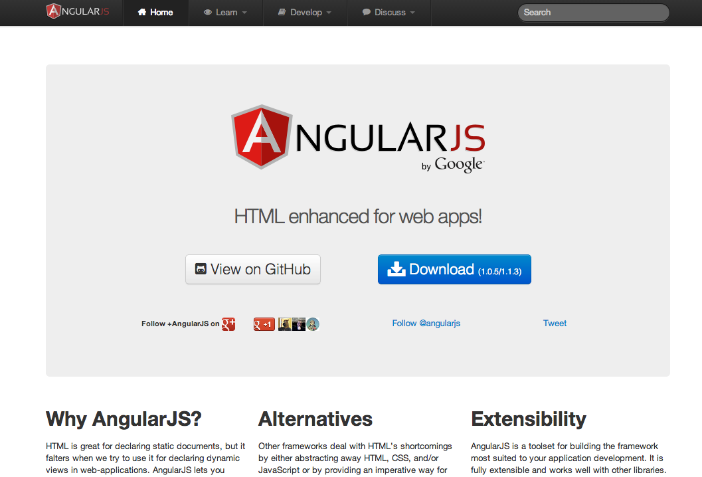
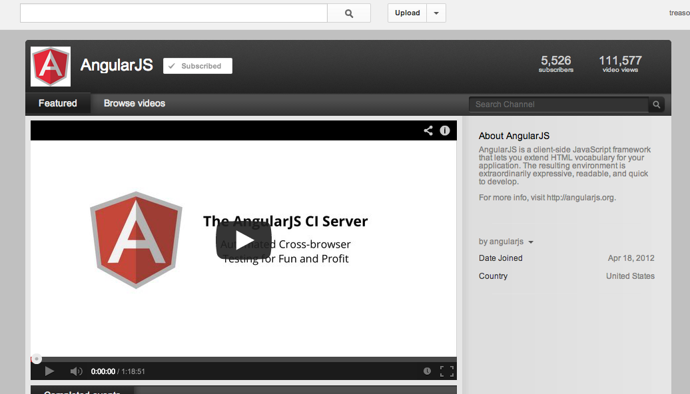
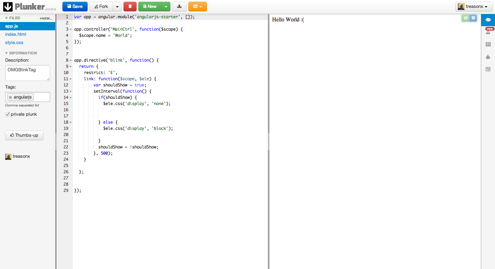

Crash Course
What R This?
+James MorrinBamGreenEggsAndHam.com
Demo
OMG No JavaScript!
How is angular different?
- Full testing story
- Two way data bindings
- Dependency Injection
- Teach HTML new tricks
What is the scope?
- The "backbone" if your application
- provides data to the views
- acts as a pubsub
- observes changes and notifies views
Scope Life cycle
Not part of lifecycle
Broken Demo
Part of lifecycle
Working Demo
Scope Inheritance
Pubsub on the Scope!
AngularJS The Bad Parts!
Naming (module)
module !== commonjs module
module !== AMD module
module !== Module Pattern
WTF is an Angular Module?
Naming ($scope)
$scope !== js scope
No Data Model
$scope is not your model!
Don't treat $scope like a model
If you do.....
Better hope future you doesnt have a

Or a
Because future you will...
Burn your house down..
Directives
Unit of code resuse in Angular
No easy way to extend or inherit from Another Directive
AngularJS wants to own the WORLD!
AngularJS The Good Parts!
2 way data bindings
Powerful template engine
{{attr | lowerCase | upperCase | iHaveNoIdeaWhatImDoing }}
Dependency Injection
Testing
Resources!
The Official Docs
But.....
They kinda suck!
The advantage of transclusion is that the linking function receives a transclusion function which is pre-bound to the correct scope. In a typical setup the widget creates an isolate scope, but the transclusion is not a child, but a sibling of the isolate scope. This makes it possible for the widget to have private state, and the transclusion to be bound to the parent (pre-isolate) scope.
WAT?
Video Resources
Code Examples

Thanks!
- Twitter: @treasonx
- GitHub: treasonx
- Blog: BamGreenEggsAndHam.com